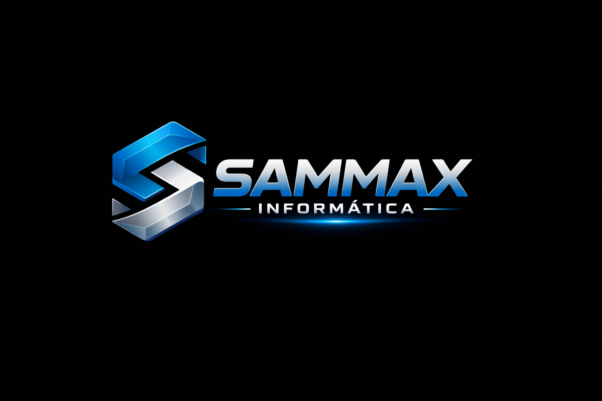

Prestar serviços técnicos em informática com agilidade, qualidade e confiança, garantindo que empresas tenham seus sistemas funcionando de forma eficiente, segura e sem interrupções.
Ser referência em suporte técnico e soluções em tecnologia em Brasília e região, reconhecida pela rapidez no atendimento, profissionalismo e relacionamento com os clientes.
• Compromisso com o cliente
• Agilidade no atendimento
• Transparência e honestidade
• Qualidade nos serviços prestados
• Responsabilidade e profissionalismo
• Foco em solução, não no problema
Avenida Comercial, 865 – São Sebastião, DF
(61) 98345-3984
sammaxinformatica1@gmail.com
Fale agora pelo WhatsApp